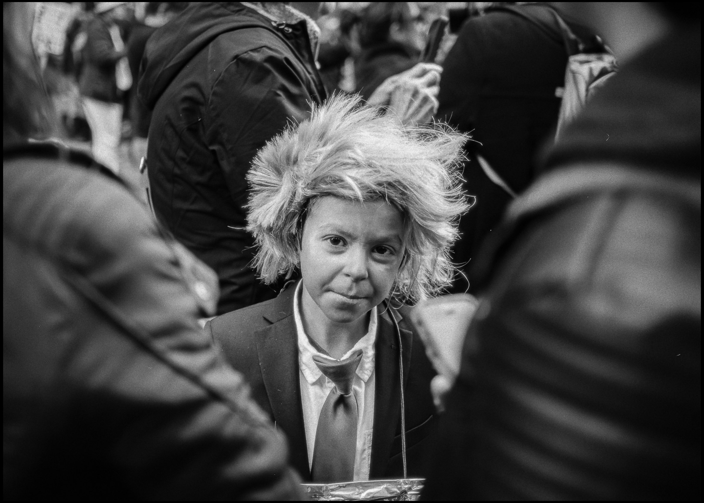

First Day
Chicago, January 21, 2017
First Day
Chicago, Illinois — January 21, 2017
A quarter million people gathered in downtown Chicago for the Women’s March the day after the inauguration of the 45th President of the United States.
Photographed from the gangway between CTA Green Line train cars above Jackson Boulevard.
Inside
the March
From street level the march felt endless. From above, the city revealed its shape.
Continue
The morning after the 45th president of the United States was sworn in is one of those days for me.
You could feel the shift before anything really started. The weeks leading up to January 21, 2017 were strange and heavy in a way that was hard to ignore. I felt it in airports in cities all over the country, in terminals and on flights while I was working. Back then, most people avoided talking politics with strangers. Suddenly there it was at 30,000 feet: anxiety, anger, fear, wild optimism, jokes that weren’t really jokes.
Back home in Chicago, that same weight was in the air. So when people started talking about the Women’s March, it made sense that the city would show up — and I knew I should too.
Nearly 250,000 people pulled into the Loop that morning. Families. Elders. Kids in strollers. Babies in arms. Kids in capes. Women carrying flowers. Cardboard signs you could tell were made the night before at kitchen tables and in living rooms: some funny, some sharp, some petty, all personal. Every slogan on cardboard came from somebody’s body.
Chants bounced between buildings. The Chicago Bucket Boys blessed the streets with that classic Chi-Town drumline, cracking off glass and steel. Phones were out, cameras up, cops on bikes posted at the edges.
From street level I could feel how big it was in my chest before I could really see it with my eyes. The energy sharpened everything. But visually, it started to feel small. Too many angles felt obvious. Too many lenses pointed the same way at the same signs. And if you know me, you know I’m not out there to remake the same frame as the next photographer.
We were living through a turning point, and I wanted to make a photograph that actually felt like one.
At some point, in all that noise, I heard the train overhead.
I had the shot in my head before I even saw the platform. I linked up with another photographer I knew in the crowd, pointed up, and basically said, “Yo, we gotta get up there and shoot this from above.”
By the time I made it up to the elevated platform, the march was already deep into downtown. I knew I had one shot at this. One pass over the crowd. One chance to line my body, the lens, and Jackson Boulevard up the way I’d already composed it in my mind.
I went out onto the gangway between two CTA cars on the Green Line — not inside the train, not behind the glass. Just that skinny strip of space with all the steel and grease, open to the winter air. Camera strap wrapped tight around my wrist. One hand locked on the rail, the other riding my settings as the train curved and picked up speed toward Wabash and Jackson.
And then it opened up.
What felt chaotic and cramped from the street turned into something undeniable from above. The crowd read as one body, filling Jackson from edge to edge. Signs turned into texture. People became pattern. The noise turned into a single visible pulse that stretched down the block.
FIRST DAY is that moment — 1/2500 of a second where a quarter million people moving through downtown Chicago became a shape you can actually see.
Nearly a decade later, it doesn’t feel like a one-off. It feels like the first page of a chapter we’re still inside. The fears and warnings people were carrying on cardboard that day aged into reality over the next four years, then the next four after that. And if you look closely, the signs kind of saw it all before a lot of us did.
That’s why I treat FIRST DAY — and a lot of the photographs I made that afternoon — as public record, not nostalgia. It’s not a “remember when we marched?” poster. It’s proof that we really did show up and say something on the very first day of what turned into a long, exhausting era.
Available as a fine art print from $100. Open and collector editions, printed in Chicago on Moab Juniper Baryta Rag.





Reading
the Frame
One of my favorite things about seeing this photograph as a print is how far the detail actually runs. The frame is sharp all the way through the back of the crowd. You can start in the foreground and just keep traveling through it — signs, faces, coats, gestures — block after block of people filling Jackson Boulevard.
When people stand in front of the print, they start scanning it. Someone always finds something new a few seconds later. A sign they missed. A face looking straight up. A pocket of people halfway down the street. The photograph keeps opening the longer you sit with it.
On a screen you get the idea. On paper you get the depth.
FIRST DAY was photographed from the gangway between two CTA Green Line train cars as the train moved over Jackson Boulevard. One pass over the crowd. One frame at 1/2500 of a second. The train hardware visible in the frame is intentional. It marks the exact place the photograph was made.
Print Information
FIRST DAY is printed on Moab Juniper Baryta Rag — a fiber-based baryta paper with a warm white base and exceptional tonal depth for black and white printing. Signed by the artist. Certificate of authenticity included with every print. Available in open editions and a limited collector edition.
Prints start at $100. Open editions in 8.5 × 11, 11 × 14, and 13 × 19. Collector editions in 17 × 22 (limited to 15) and 24 × 36 (limited to 7), individually numbered. Printed in Chicago.
“On a screen you get the idea. On paper you get the depth.”
“And then there’s what gets left behind when the crowd goes home.”
New prints and collector editions announced by email. No noise.